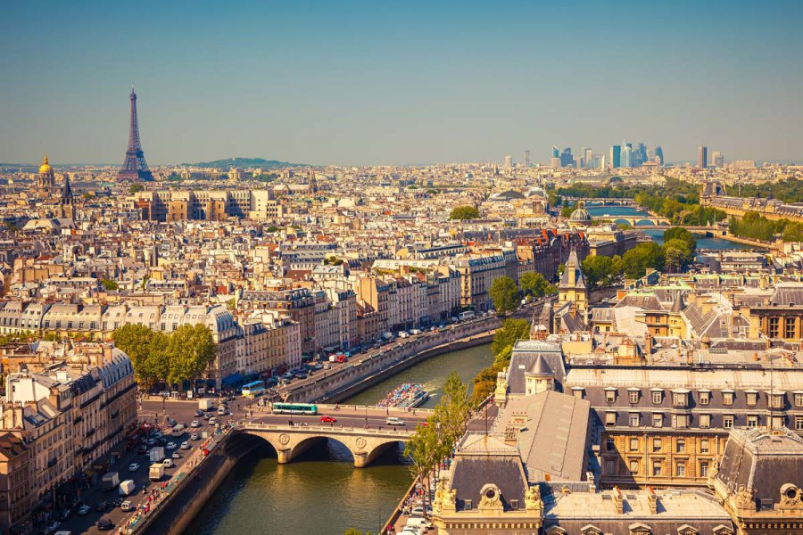

Дата та місце народження: 29.11.2002 р., м. Дніпро, Дніпропетровська обл.
Освіта:
Школа: ССЗШ №126 з поглибленим вивченням французької мови, м.
Дніпро
Університет: Національний технічний університет України «Київський
політехнічний інститут імені Ігоря Сікорського», ФІОТ, Інженерія
програмного забезпечення
Хоббі:
Улюблені фільми:
Париж (фр. Paris) — столиця Франції, адміністративний центр регіону Іль-де-Франс. Окремий департамент Франції. Розташований на річці Сена. Населення — 2 175 601 особа (на 01.01.2021), міська агломерація — 10 млн, у 2015 році населення міста становило 2 206 488 осіб, агломерації — 12 405 426. Штаб-квартири низки міжнародних організацій: ЮНЕСКО, Організація економічного співробітництва та розвитку, Міжнародна торгівельна палата та інші. Центр світової торгівлі (автомобілі, літаки, канцелярські товари й туристичне спорядження); головний національний промисловий округ (засоби транспорту, енергетичне обладнання, електроніка, одяг, косметика), фінансово-банківська столиця; великий транспортний вузол (2 міжнародні аеропорти).
